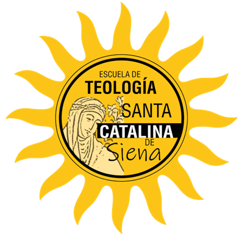

SEMINARIO INTERNACIONAL
CLASE #1
LA EXISTENCIA DE DIOS
Enric Fdez. Gel
Ver video
CLASE #2
PRUEBAS HISTÓRICAS DE LA RESURRECCIÓN DE JESÚS
CONFERENCISTA: SANTIAGO ALARCÓN
Ver video
CLASE #3
¿FUNDÓ CRISTO UNA IGLESIA?
CONFERENCISTA: JOSÉ PLASCENCIA
Ver video
CLASE #4
La Fiabilidad del Nuevo Testamento. El Canon Bíblico y la Cuestión de los Deuterocanónicos
Dante A Urbina
Ver video
CLASE #5
El Sacerdocio Ministerial en las Sagradas Escrituras y en La Tradición de la Iglesia
Frank Morera
Ver video
CLASE #6
La Verdadera Enseñanza Cristiana sobre la Justificación, la Santificación y la Salvación
Hugo Delgado.
Ver video
CLASE #7
El Primado de Pedro. El Papado en las Escrituras, la Tradición y la Historia Eclesiástica
Fabian Ramos.
Ver video
×